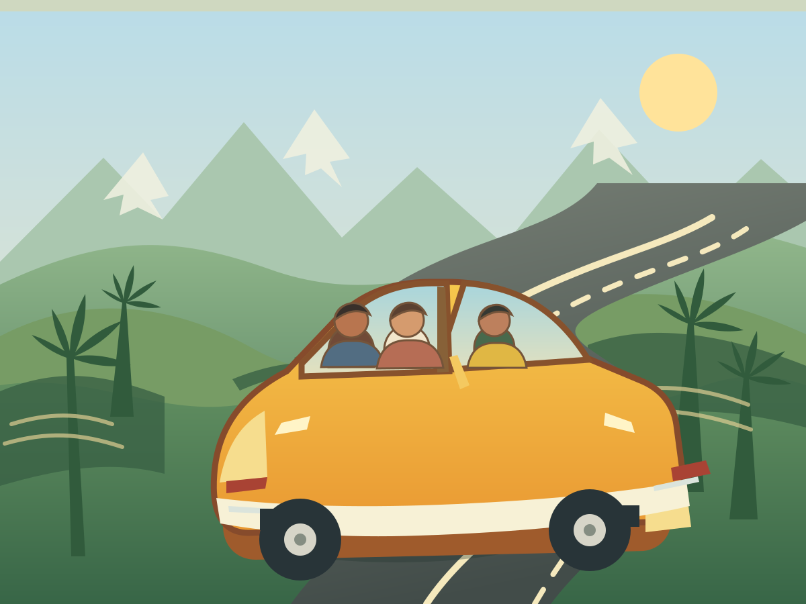

Una presentación personal
Hola, soy Wilmer Nicolas Ortiz Olarte.
Esta es una pequeña colección de momentos que me han enseñado, inspirado y ayudado a crecer. Cada experiencia forma parte de quien soy hoy.
Conoce mi historiaLos textos son ejemplos que puedes personalizar con tus propias experiencias.

 Balón y trofeo de campeón
Balón y trofeo de campeón
01 — Mis primeros pasos
Un comienzo que recuerdo
A los 7 años — Academia de Millonarios FC
Cuando tenía 7 años, formé parte de la academia de Millonarios FC. Allí viví uno de los momentos más especiales de mi infancia: junto a mi equipo disputamos un campeonato muy importante y llegamos a la final.
En ese partido marqué tres goles e hice un triplete. Con el esfuerzo de todo el equipo, logramos ganar el campeonato. Fue una alegría enorme y un recuerdo que siempre llevo con orgullo.
Esta experiencia me enseñó el valor de entrenar, perseverar y trabajar en equipo para alcanzar una meta.
 Pasión por el fútbol
Pasión por el fútbol
02 — Algo que conseguí
Un logro que me hizo crecer
Academia Iguarán FC — Liga Bogotá
Me esforcé al máximo para alcanzar una meta importante: entrar en la categoría de proyección de la Academia Iguarán FC. Con dedicación y constancia, logré entrar y tener la oportunidad de seguir creciendo como futbolista.
En mi primer campeonato participé en la Liga Bogotá. Fue una experiencia muy especial: competimos con esfuerzo como equipo y quedamos en tercer lugar. Me sentí orgulloso de lo que conseguimos y de todo lo que aprendí en el camino.
Este logro me enseñó que la disciplina y la perseverancia ayudan a convertir un objetivo en realidad.

Un viaje por el Quindío03 — Un momento especial
Una aventura inolvidable
Un viaje por carretera con mi familia
Con mis padres y mi hermano recorrí todo el Quindío en un viaje por carretera. Fue muy divertido conocer tantos lugares y disfrutar los paisajes, los pueblos y la naturaleza de la región.
Lo que más me gustó fue compartir el camino y convivir con mi familia durante el viaje. Juntos vivimos una aventura especial que recuerdo con mucho cariño.
04 — Mirando hacia adelante
Lo mejor también está por venir
Cada experiencia me ha ayudado a conocerme un poco más. Hoy quiero seguir aprendiendo, cuidar a las personas que son importantes para mí y trabajar por mis sueños, paso a paso.
Esta historia sigue escribiéndose. Tengo curiosidad por descubrir los nuevos retos, las amistades y las oportunidades que encontraré en el camino.
Volver al inicio